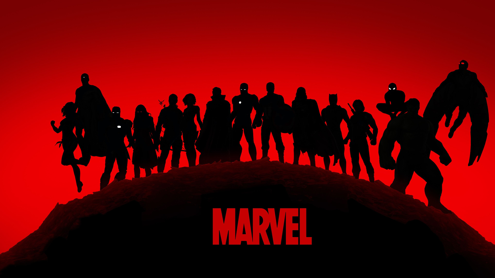
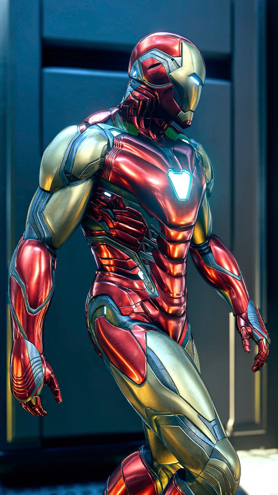
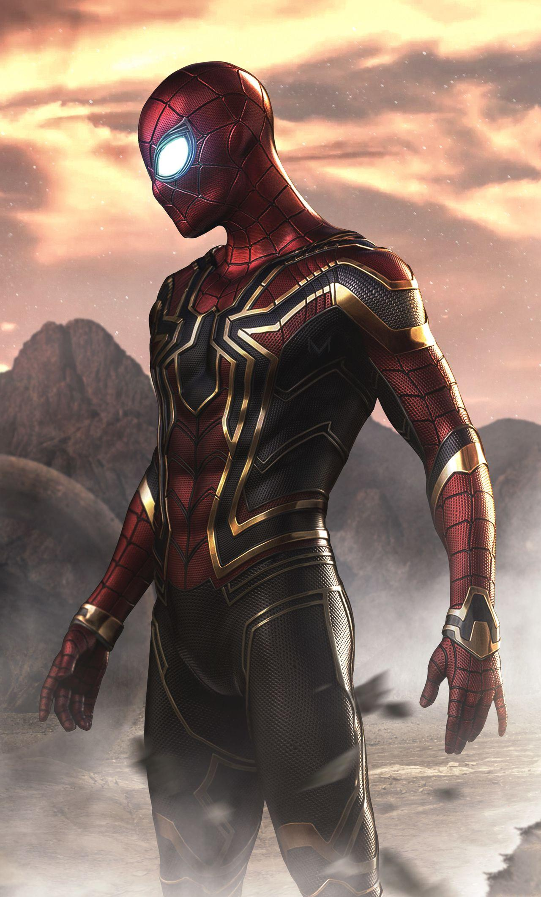
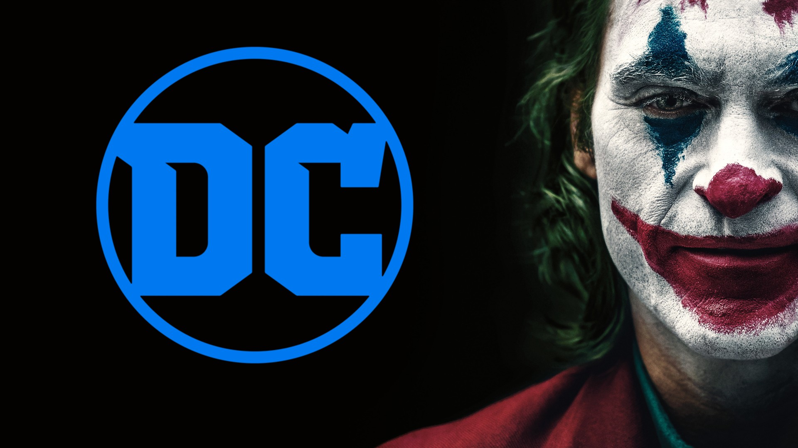
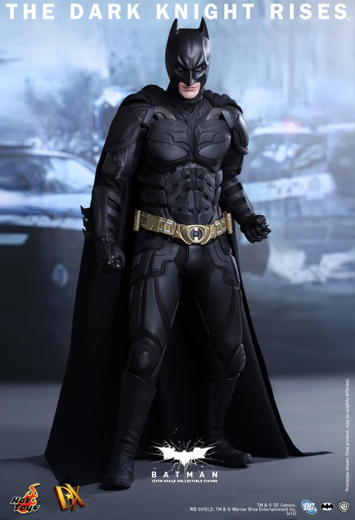
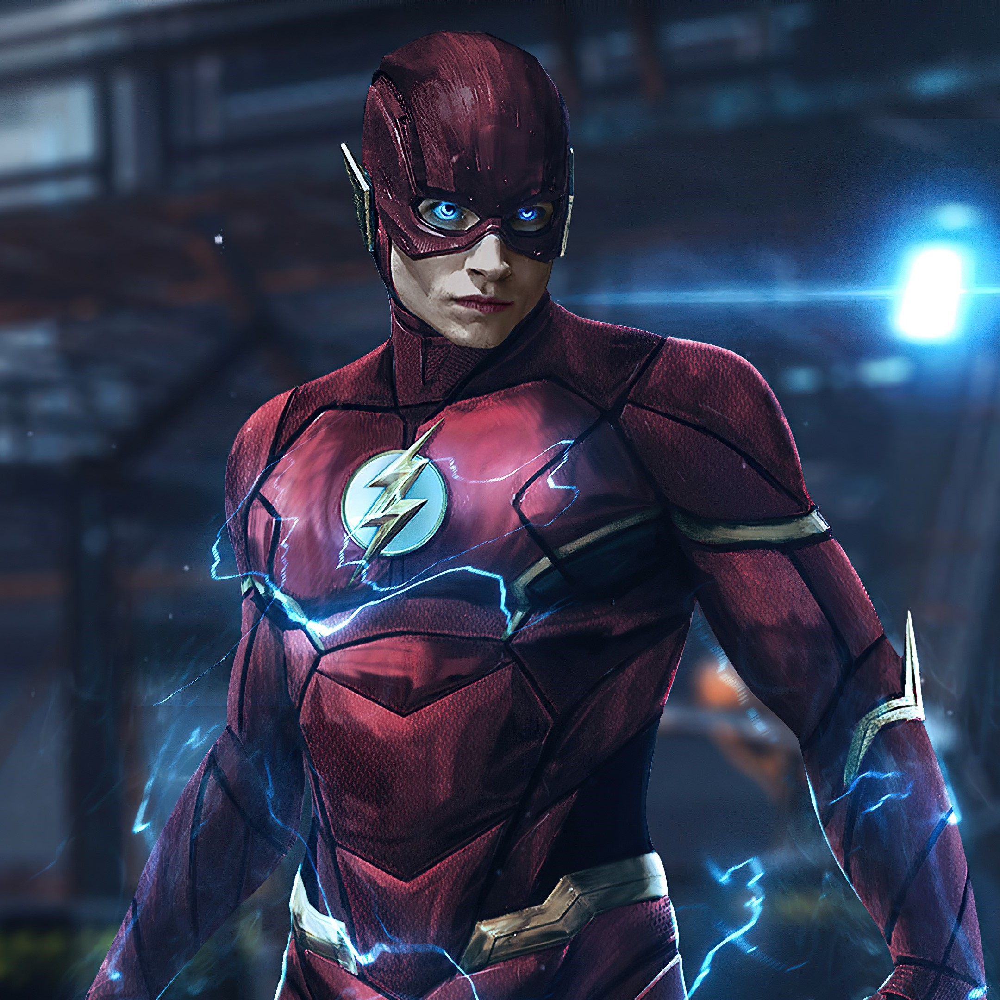
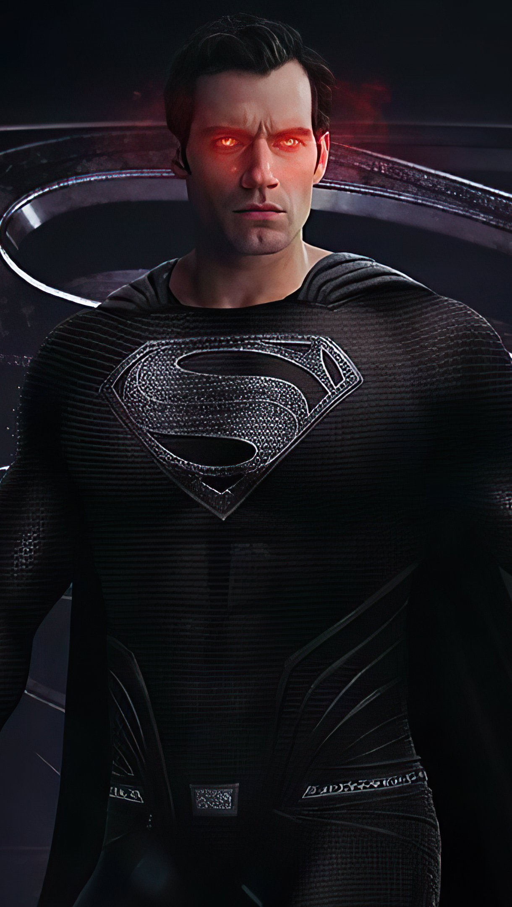
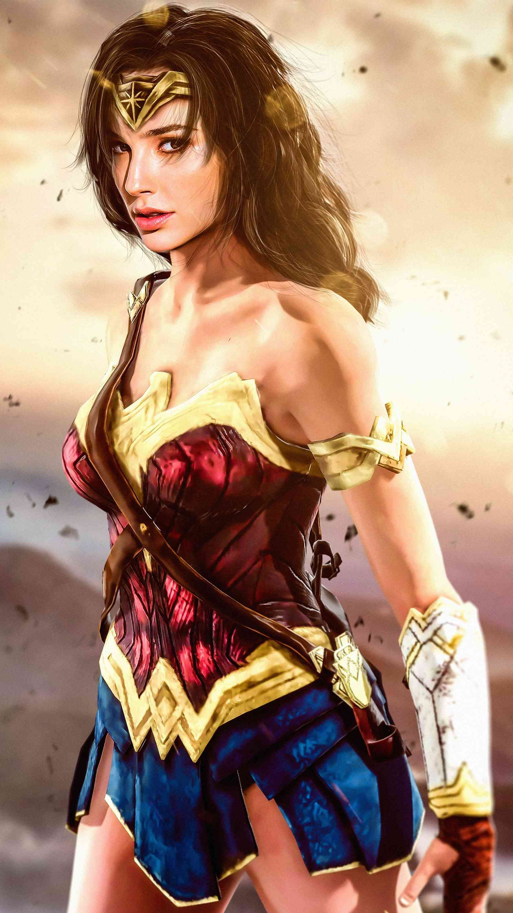

<!--This is a page for my favorite Ideal Superheroes-->
<!DOCTYPE html>
<html>
<head>
	<title>Superheros</title>
</head>	
<body>
	<h1 align="center"><span>Superheros - A Web Page Created By Akant Malviya</span></h1>
	<hr/>
	<p align="center" style="font-size:150%;"> Superhero or superheroine is a stock character that possesses superpowers, abilities beyond those of ordinary people, and fits the role of the hero, typically using his or her powers to help the world become a better place, or dedicating themselves to protecting the public and fighting crime.<p>
	<h2>Marvel</h2>
	
	<p style="font-size:150%;">The Marvel Cinematic Universe (MCU) is an American media franchise and shared universe centered on a series of superhero films produced by Marvel Studios. The films are based on characters that appear in American comic books published by Marvel Comics.<br/><br/>&#20;The franchise also includes television series, short films, digital series, and literature. The shared universe, much like the original Marvel Universe in comic books, was established by crossing over common plot elements, settings, cast, and characters.</p>
	<p style="font-size:150%;"><ins>Top 5 Marvel Superheroes According to me</ins></p>
	<table align="center"><tbody><tr>
		<td><a href="https://www.marvel.com/characters/iron-man-tony-stark" target="_blank"><h3 style="text-align:center"><strong>IRONMAN</strong></h3></a></td>
		<td><a href="https://www.marvel.com/characters/thor-thor-odinson" target="_blank"><h3 align="center"><strong>THOR</strong></h3></a>></td>
		<td><a href="https://www.marvel.com/characters/doctor-strange-stephen-strange" target="_blank"><h3 align="center"><strong>DOCTOR STRANGE</strong></h3></a></td>
		<td><a href="https://www.marvel.com/characters/spider-man-peter-parker" target="_blank"><h3 align="center"><strong>SPIDERMAN</strong></h3></a></td>
	</tr></tbody></table>
	        
	<!-- Media section start
		<iframe align= "center" height="150" width="300" src="https://youtu.be/UhVjp48U2Oc" allowfullscreen frameborder="0"></iframe>
	 Media section end -->
	 
	<ul>
		<li style="font-size:100%;">Ironman Powers - Superhuman strength, speed, durability, agility, reflexes, and senses. Supersonic flight. Energy repulsor and missile projection. Regenerative life support.</li>
		<li style="font-size:100%;">Thor Powers - superhuman strength, speed, agility, durability and immunity, Mjolnir an enchanted hammer, stormbreaker, power over storms, energy blasts.</li>
		<li style="font-size:100%;">Doctor Strange Powers - Magic, Time Travel, Martial arts, Book of the Vishanti, Cloak of Levitation, Eye of Agamotto </li>
		<li style="font-size:100%;">Spiderman Powers - Superhuman Strength, Superhuman Speed, Superhuman Reflexes, Superhuman Durability, Healing Factor, "Spider-Sense" Alert, Heightened Senses, Wallcrawling.</li>
	</ul>
	<h2>DC</h2>
	
	<p style="font-size:150%;">DC Comics is one of the largest and oldest American comic book companies, with their first comic under the DC banner being published in 1937.[8] The majority of its publications take place within the fictional DC Universe and feature numerous culturally iconic heroic characters, such as Superman, Batman, Wonder Woman, Flash, Aquaman, Green Lantern, and Cyborg. It is widely known for some of the most famous and recognizable teams including the Justice League, the Justice Society of America, the Suicide Squad, and the Teen Titans.</p>
	<p style="font-size:150%;"><ins>Top 4 DC Superheroes According to me</ins></p>
	<table align="center"><tbody><tr>
		<td><a href="https://www.dc.com/characters/batman" target="_blank"><h3 align="center"><strong>BATMAN</strong></h3></a></td>
		<td><a href="https://www.dc.com/characters/the-flash" target="_blank"><h3 align="center"><strong>FLASH</strong></h3></a></td>
		<td><a href="https://www.dc.com/characters/superman" target="_blank"><h3 align="center"><strong>SUPERMAN</strong></h3></a></td>
		<td><a href="https://www.dc.com/characters/wonder-woman" target="_blank"><h3 align="center"><strong>WONDER WOMAN</strong></h3></a></td>
	</tr></tbody></table>
	<ul>
		<li style="font-size:100%;">Batman Powers - Superhuman strength, speed, durability, agility, reflexes, and senses. Supersonic flight. Energy repulsor and missile projection. Regenerative life support.</li>
		<li style="font-size:100%;">Flash Powers - superhuman strength, speed, agility, durability and immunity, Mjolnir an enchanted hammer, stormbreaker, power over storms, energy blasts.</li>
		<li style="font-size:100%;">Superman Powers - Magic, Time Travel, Martial arts, Book of the Vishanti, Cloak of Levitation, Eye of Agamotto </li>
		<li style="font-size:100%;">WonderWoman Powers - Superhuman Strength, Superhuman Speed, Superhuman Reflexes, Superhuman Durability, Healing Factor, "Spider-Sense" Alert, Heightened Senses, Wallcrawling.</li>
	</ul>
</body>
</html>
<!--Frames-->
<!--<frameset cols="25%,50%,25%">
   <frame src="Page.html" />
   <frame src="E:\4. Projects\HTML Pages\Akant Malviya CV\resume.html" />
   <noframes>Frames not supported!</noframes>
</frameset>-->

